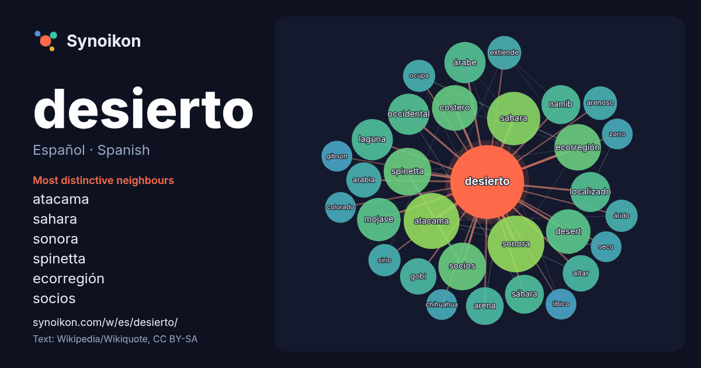

Español · Spanish · word of the day list
desierto
“desert” · The words found around it in 1291 instances from Spanish Wikipedia, Wikiquote.

Most distinctive neighbours
- atacama 33×
- sahara 30×
- sonora 29×
- spinetta 24×
- ecorregión 24×
- socios 23×
- costero 22×
- desert 22×
- mojave 21×
- namib 17×
- sáhara 17×
- laguna 16×
- localizado 16×
- gobi 15×
- árabe 13×
- altar 13×
- arabia 13×
- arenoso 13×
- arena 13×
- occidental 12×
× = how many times more often than in general Spanish Wikipedia text.
Most frequent neighbours
- sonora 34
- atacama 33
- sahara 30
- sur 29
- norte 28
- región 24
- socios 24
- spinetta 24
- conocido 23
- ecorregión 23
- costero 22
- desert 21
- zona 21
- mojave 20
- mundo 19
- árabe 18
- laguna 18
- occidental 18
- localizado 17
- nacional 16
In context
- desierto es un bioma de clima árido, en donde las precipitaciones son escasas. Estos suelen poseer poca vida, pero eso depende del tipo de desierto; Wikipedia snippets · Desierto
- El desierto de Sonora (en inglés: Sonoran Desert), también conocido ocasionalmente como desierto de Gila por su proximidad al río Gila, es un extenso Wikipedia snippets · Desierto de Sonora
- origen climático de este desierto se debe a una gran sombra orográfica por su cercanía al Himalaya. Históricamente, el desierto de Gobi destaca por haber Wikipedia snippets · Desierto de Gobi
- El desierto Líbico o desierto Libio (en árabe: الصحراء الليبية) se encuentra ubicado al noreste del desierto del Sahara. Ocupa la zona occidental del Wikipedia snippets · Desierto Líbico
- El Desierto sirio o desierto de Sham (del árabe: بادية الشام, bādiyat ash-shām) es una combinación de estepa y desierto que está ubicada en el norte de Wikipedia snippets · Desierto sirio
- oriental. El desierto de Arabia tiene un subtropical, clima desértico caliente, similar al clima del desierto del Sahara (el desierto caliente más grande Wikipedia snippets · Desierto de Arabia
- Desierto arábigo (الصحراء الشرقية) o Desierto oriental de Egipto es el nombre que recibe la franja longitudinal del Sahara del este situada entre el Nilo Wikipedia snippets · Desierto arábigo
- Andes atravesando el desierto. Forma parte de una ecorregión mayor conjuntamente con el desierto costero de Chile, el desierto del Pacífico. El WWF emplea Wikipedia snippets · Desierto costero del Perú
More Spanish words
- agua
- arte
- bosque
- caballo
- camino
- campana
- canción
- ciencia
- ciudad
- clima
- comida
- corazón
- dinero
- dios
- espejo
- estrella
- familia
- fuerza
- gato
- historia
- invierno
- isla
- jardín
- lengua
- lluvia
- madre
- mapa
- miel
- montaña
- muerte
- naturaleza
- oro
- otoño
- pan
- perro
- puente
- reloj
- sal
- salud
- silencio
- sombra
- tiempo
- tormenta
- trabajo
- tren
- té
- verano
- verdad
- vida
Precomputed on 2026-10-09 with default settings (±5 words, medium corpus). The interactive map can refresh it with live data.